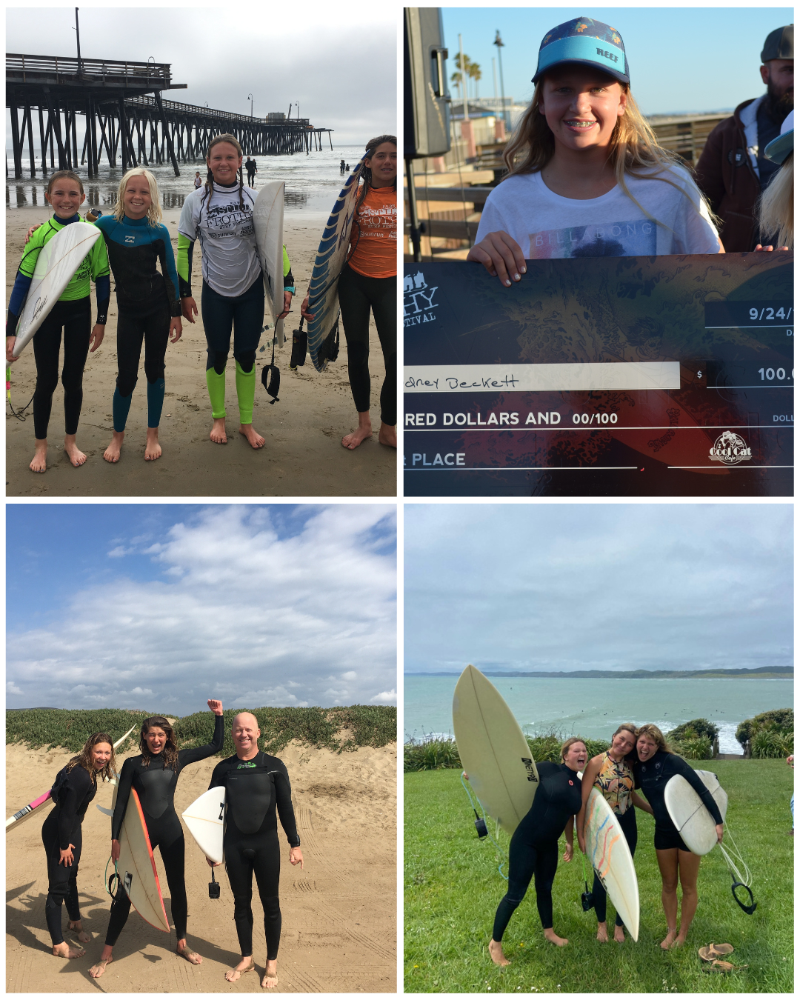

Passions
Surfing
Ever since I could stand my dad has been pushing me into waves. Throughout my childhood I developed a passion that grew a bigger and bigger part of my life. When I was about 12 I started doing competitions through a program called NSSA with my best friend. I would travel up and down the coast practicing and getting better. In high school I also continued to compete for my high schools surf team, my dad was also the coach! And it didnt end when I graduated high school, I then got on the UCSB surf team and continue to surf and compete for the team now. I am so grateful to have this hobby that allows me to immerse myself in the ocean and feel so grounded in nature. Below are some images of me surfing from a very young age to present!

Traveling
I’ve been fortunate to spend much of my childhood—and continue to do so—traveling with family and friends. I love traveling because it allows me to explore new places, experience different cultures, and see the world from fresh perspectives. On my most recent adventure, I studied abroad in Australia. After school, seven friends and I traveled down the East Coast of Australia in a motorhome, from Brisbane to Sydney. We then flew to New Zealand, where we explored the North Island in another motorhome, chasing waves and embracing the spirit of adventure. Below is a little collage of some of the adventures during my time away!

Below I created a map of all of the places that I traveled after my study abroad! I used the leaflet package to create an interactive portion so you can click on each point to show what town/country it is in.